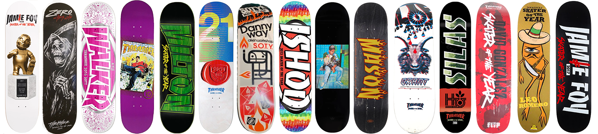
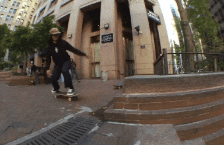
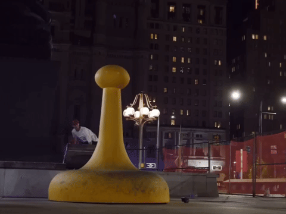
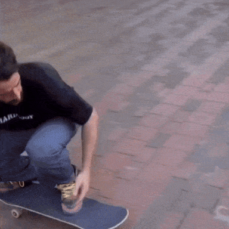
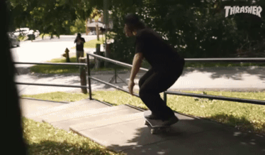
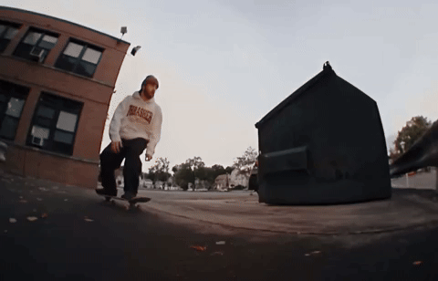
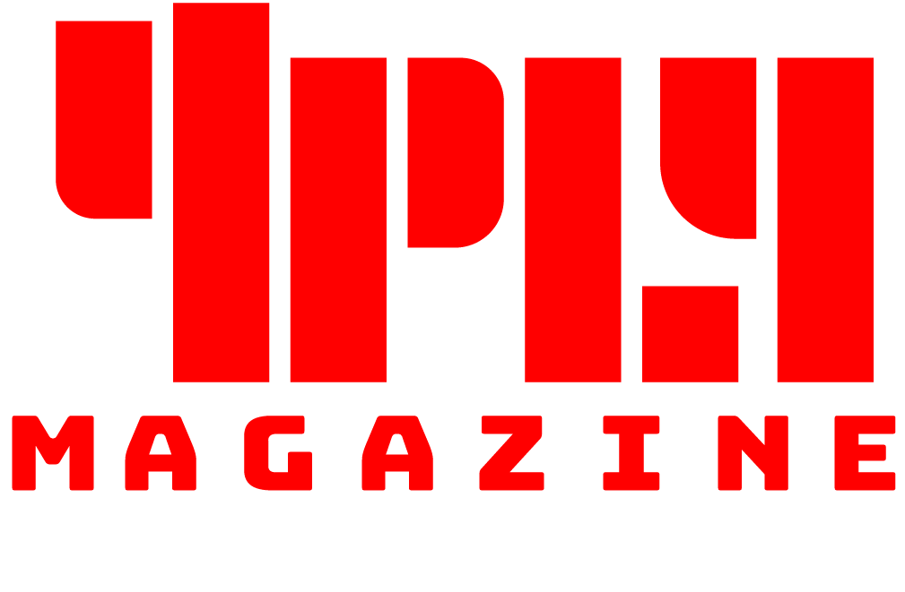

The fix is in.
Whenever it comes to declaring who is “best”, unless we are ranking a singular column of objectively observed statistics, there will always be a huge deal of subjectivity going into the proclamation. Even when we are working with quantitative measurements we are still faced with the subjective challenge of deciding which stats should hold the greatest weight. What even is “best”?
And non-measurable considerations like style, legacy, popularity, reputation, image, context, and positioning relative to others are no less important. In fact, these matter-of-opinion factors often take precedence in skateboarding. The numbers might back up our assumptions of greatness, or we might find other numbers, or we could dismiss numbers altogether.
Even if we can somehow reach a general consensus on the parameters of excellence in regards to both the stats and the intangibles, one has to consider the hidden components. Many behind-the-scenes machinations hold sway over awards in every industry: Who will benefit, both directly and by association? Will giving the award to one person over another benefit the bestower? What benefactor-awardee relationships already exist? And this is to say nothing of generally-held biases of all kinds, or the prejudices specific to the grantor of “greatness”.
So with that in mind, let’s explore the skate champs of 2023 with some cold hard skate video facts. You want to know who dominated? Check the Leaderboard:
Statement on Data & Methodology: The video statistics in this table were provided by the amazing folks at the skatefol.io video website. Their mission is to catalog every skate clip so skaters and filmers can be properly recognized and appreciated. (If you want to find out who that rando is in the middle of the montage section, check out skatefol.io. If you want to see every Ishod guest clip from last year (all cued up), head to skatefol.io).
A side effect of all of this meticulous clip-mapping is that skatefol.io is uniquely equipped to report a skater’s complete video output for the year. From solo parts to single cameo tricks, they’ve logged it all. Read their statement on tracking process and parameters here. Note that "personality" and B-roll pieces like My Wars aren't part of the stats.
The Leaderboard is sortable by category so you can know definitively who ‘had the most’ in 2023. The most clips, the most footage, the most video appearances, the most full parts, and the “Generosity Percentage”, which is the percentage of footage given to the projects of others via montage or cameo tricks (= clip time in non-part projects divided by total clip time).
4PLY added an additional statistical “Views” category, which is the total YouTube views (as of early January 2024) of the single video project from which the skater had their greatest number of clips.
The Leaderboard charts contain 40 of the most productive skaters of last year, including all of Thrasher’s Skater of the Year Contenders.

Of course, all this analysis is leading us inevitably towards every skateboarder’s favorite activity: arguing about who got SOTY.
Any Skater of the Year prognostication or retrospective review needs to look at skateboarding through a “Thrasher” lens. SOTY is Thrasher’s SOTY (just like Slam Magazine’s Australian SOTY is not Thrasher’s SOTY). We’re not just talking about the preference for skaters whom embody the “hellride” ethos (but, yeah, also that). More specifically, this means that the preferences and opinions of the owner, managing editor, and editor-in-chief of Thrasher Magazine loom large.
Even more important (and even less transparent) are the considerations of Thrasher as a business.
"Dollars, homeboy.”
Getting SOTY is a big boost for not just a skateboarder, but also his sponsors. With a
sponsor-branded victory trip to be funded, possible product tie-ins to be sold, and likely advertising alliances to be forged or reinforced, it is safe to assume that who a skater is sponsored by is a very large factor in the deliberations indeed.

This isn’t to say that a SOTY pronouncement is entirely transactional, but it is naive to think that Thrasher isn’t examining their choices from a brand partnership angle.
To put it frankly, a skater needs some sponsors with deep pockets for a realistic shot at the trophy. And this typically means shoe sponsorship dollars. We’re not saying that Adidas has bought themselves an SOTY the past three years, but there is no chance that a skater is getting the crown sans shoe sponsor, regardless of the year they had.
That’s right. T-Funk never stood a chance.
In addition to future monetary considerations, one can eliminate a skater’s SOTY prospects with a glance at where their video output was hosted. Which is to say: whose channel got the ad revenue from all the videos views? With this in mind, we can see that someone like Ryuhei Kitazume (who dropped videos hosted by Tightbooth, Pocket Mag, Nike SB, and Free Skate, but only the solo-release of his Lenz III part was exclusively through Thrasher) was an unlikely candidate for SOTY. Conversely, Perdo Delfino was very friendly with 10 appearances on Thrasher-hosted videos.
Some service deserves service in return. Does it not?
This same set of circumstance might have ultimately doomed the campaigns of John Shanahan (whose parts were all released on DGK, DC, or Pangea Jeans channels) and Yuto Horigome (who gave Thrasher 1 part but his others were hosted by Nike SB, April, and filmmaker Braden Gonzales’ channel). Just like working with Transworld back in the day kept such superstars as Jamie Thomas, Tom Penny, and The Muska from ever getting SOTY, dropping your best footage for some other website (or god forbid your shoe sponsor's account) is not going to be rewarded.
Like we said, the fix is in.
This isn’t to say Miles Silvas didn’t deserve to be honored for his jaw-dropping City to City part. The general sentiments of “I might not have chosen him, but I’m not mad about it” is about as positive as the support structure of skate fandom will allow. But let’s take a moment to recognize some of the other amazing years we just witnessed. Perhaps they didn’t do enough “for Thrasher”, but they certainly did enough to have their names enshrined as “Best of 2023” on some esoteric skateboarding-data website.
And if you think that some of that sweet awards payola is changing hands under 4PLY's table, we encourage you to follow the money (hint: there is none, at least not for us).

Yuto Horigome; The reigning Olympic champ's Yuto in Tokyo part (released in August) was the most watched skate video of the year by a large margin. He won the SLS Trick of the Year, took home several X-Games gold medals, got sponsored by an airline, dropped a signature Dunk colorway, had 3 parts, and, oh yeah, he also won Tampa Pro.

Fabiana Delfino quietly dropped 3 solo parts and over 10 minutes of footage in 2023, putting her at the top of the list for both women and queer skaters. Fabi is so consistently productive that the big year she just had almost seemed routine. Etnies swooping her up might be the team pick-up of the year.

John Shanahan was at the center of the most significant geographic story in skateboarding last year: the death (and creative last gasps) of MUNI in Philadelphia. He had a signature shoe come out in the summer (an actual signature shoe, not just a colorway), and 2 different top ten videos. Shanahan blasting over the Sorry piece off some propped up tiles is probably the most “2023” image possible. Amongst all this skating also found some time to get married.

Antonio Durao is the king of the underground. Which is a nice way of saying he has immeasurable talent but a complete dearth of enthusiasm for self-promotion and no marketing know-how. His output might not have been voluminous, still: A Thrasher cover, the invention of the ‘video-opening hammer’, a viral one-foot, and being Nike’s go-to guy to promote the SB Air Jordan ain’t too shabby. Serious Gonz vibes from Tony D (and Gonz never got SOTY either).

Rob Pace topped the Leaderboard in footage and clips. The dude was a stunt machine. And considering a lot of his footage was positioned as an “introduction”, it’s safe to say Rob will either be in contention every other year for the next decade… or his knees will explode and he will be known as one hell of a one hit wonder. Either way, impressive for someone we hadn’t even heard of 18 months ago.

Dick Rizzo went above and beyond his calling as the heir to Puleo’s cellar door-shaped legacy of East Coast innovation. 12 project appearances! From a couple tricks in the Down By Law Promotional Sampler on January 4th to his fourth (!) full part dropping on December 11th in Jeff Cecere's This Is A Window, Dick showed up in a crowded battle royal as the underdog and massacred it.
This is just a small sampling of the complete deluge of amazing skating that went down last year. Do yourself a favor and go type in your favorite skater's name into the search bar at skatefol.io and celebrate their entire catalog of clips.
Thanks to all the skaters who put it on the line for our entertainment. Thanks to Thrasher for giving us so many skate videos for free and kudos to them for making SOTY as important as it is. And if you don’t like who Thrasher chose for SOTY, go make your own annual award.

Follow the 4PLY feed for more spreadsheet-based thrills. Peace.